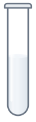
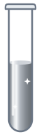
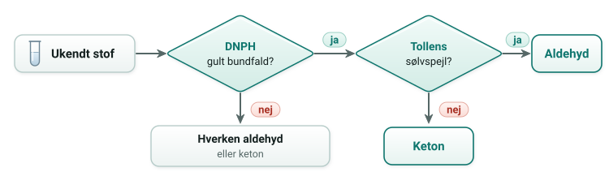

DNPH med et aldehyd eller en keton: gult eller orange bundfald

Tollens' test med en keton: ingen ændring

Tollens' test med et aldehyd: sølvspejl
Test med DNPH
DNPH er en forkortelse for 2,4-dinitrophenylhydrazin. Det reagerer med carbonylgruppen i både aldehyder og ketoner og danner et gult eller orange bundfald. Alkoholer, carboxylsyrer og estere giver ikke bundfald. Reaktionen er en kondensation, hvor oxygenatomet fra C=O og to hydrogenatomer fra DNPH fraspaltes som vand, og C=O bliver til C=N.
Tollens' test
Tollens' reagens indeholder sølv(I)ioner i en basisk opløsning med ammoniak. Et aldehyd bliver oxideret til en carboxylsyre, som straks afgiver sin hydron og bliver til en carboxylat-ion. Sølv(I)ionerne bliver reduceret til frit sølv, som sætter sig som et spejl på glasset. En keton kan ikke oxideres videre, fordi carbonatomet i carbonylgruppen ikke har noget hydrogenatom.
CH₃CHO + 2 Ag⁺ + 3 OH⁻ → CH₃COO⁻ + 2 Ag + 2 H₂O
Ammoniakken holder sølv(I)ionerne opløst. Uden ammoniak ville de danne et tungtopløseligt bundfald i den basiske opløsning.
De to test i rækkefølge
Med de to test kan man afgøre, om et ukendt stof er et aldehyd, en keton eller ingen af delene. Rutediagrammet er det samme som i bogens afsnit B4.3.

123 fane · Enter indsend svar · R forfra · H rundvisning · T teori · Esc luk